A detailed science lesson for students
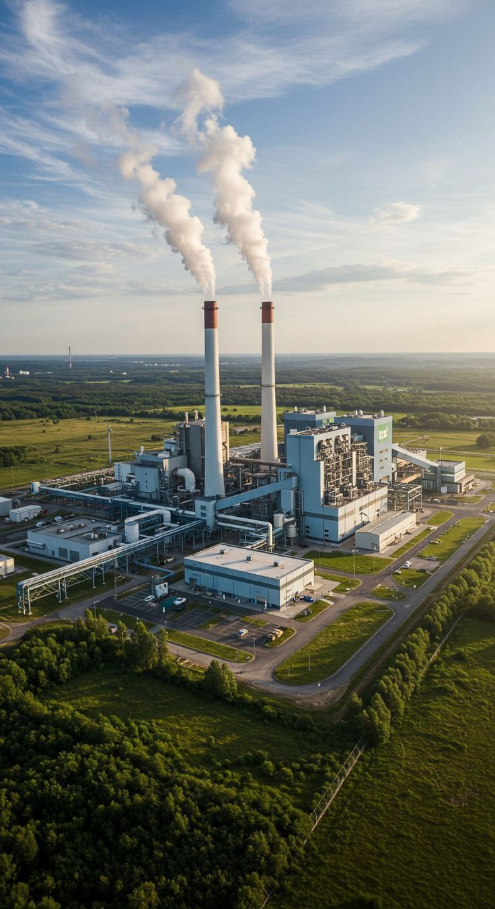
In this lesson, we will learn about energy resources, the difference between renewable and nonrenewable resources, how fossil fuels are formed, why electricity is important, how to conserve electricity, and how electricity is generated in power plants.
Humans use natural resources to produce energy. Some resources can be replaced naturally and are called renewable resources. Other resources take millions of years to form and are called nonrenewable resources. Both oil and water are important, but they are not the same in the way they are renewed.
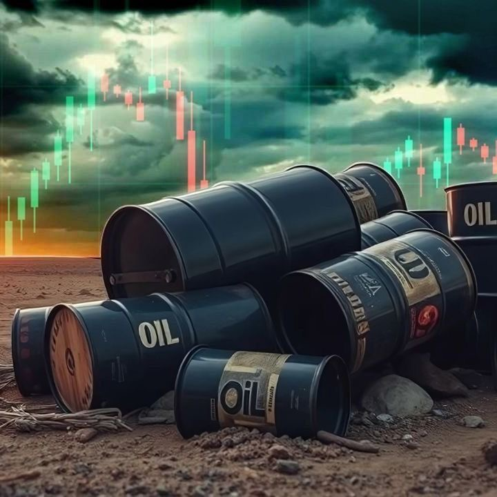
Oil is a nonrenewable resource. It forms deep underground from the remains of marine organisms that lived millions of years ago. Because it takes a very long time to form, people must use oil carefully and avoid wasting it.
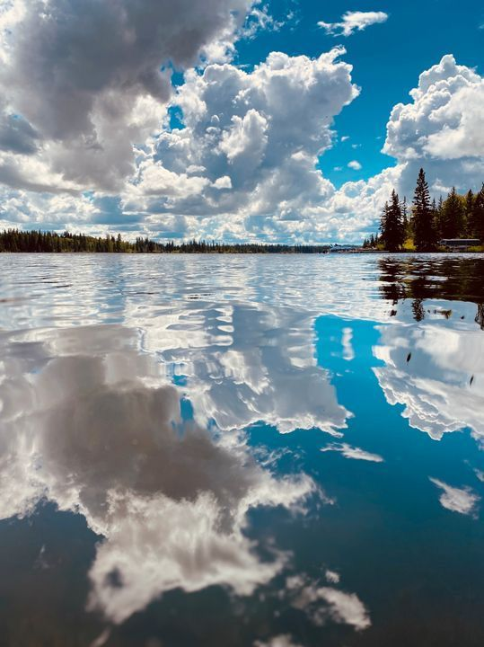
Water is a renewable resource. It can be naturally replaced through the water cycle. Water is essential for life and can also be used to generate electricity in some power stations.
Fossil fuels such as oil and natural gas are formed from the remains of marine living organisms. This process does not happen quickly. It takes millions of years under the ground.
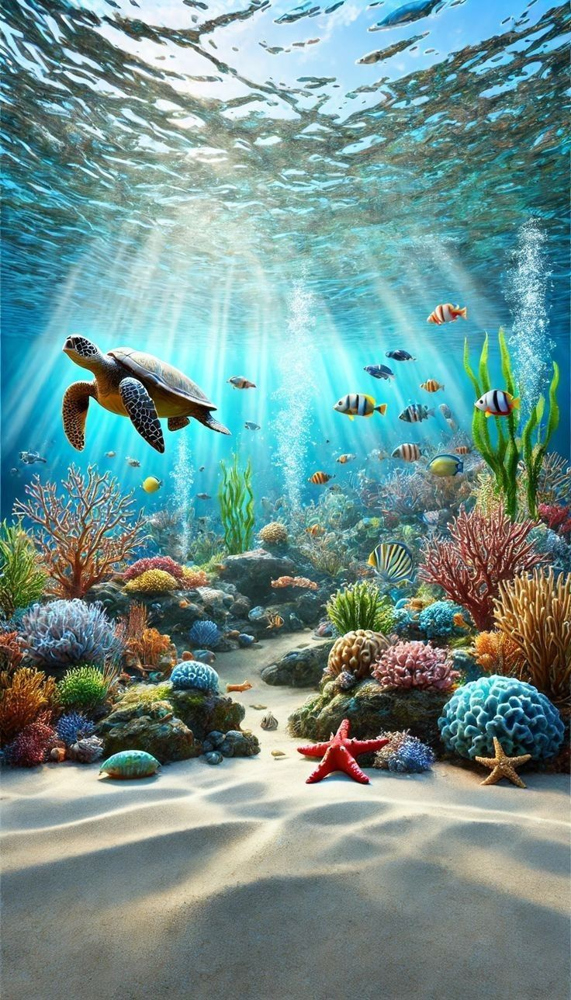
Ancient seas were full of marine organisms. These organisms lived in water a very long time ago.
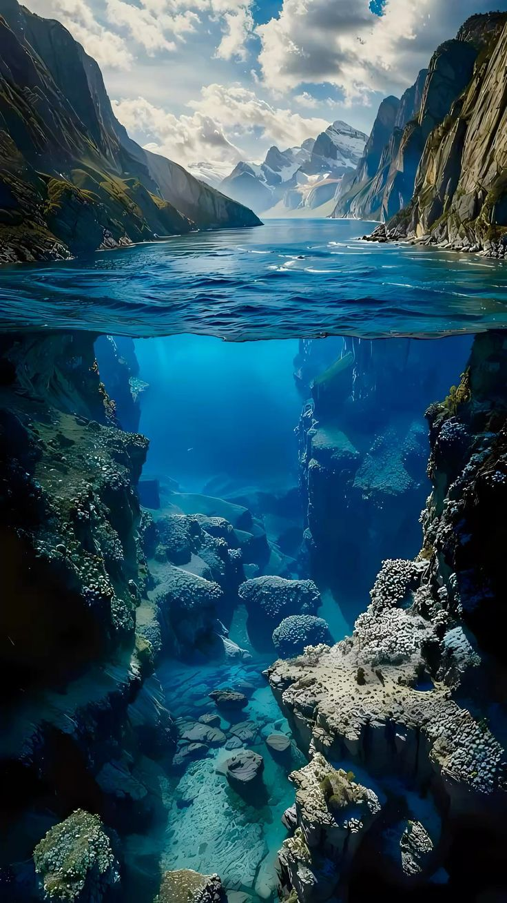
After these organisms died, their remains settled on the ocean floor and were covered by layers of sediments and rocks.
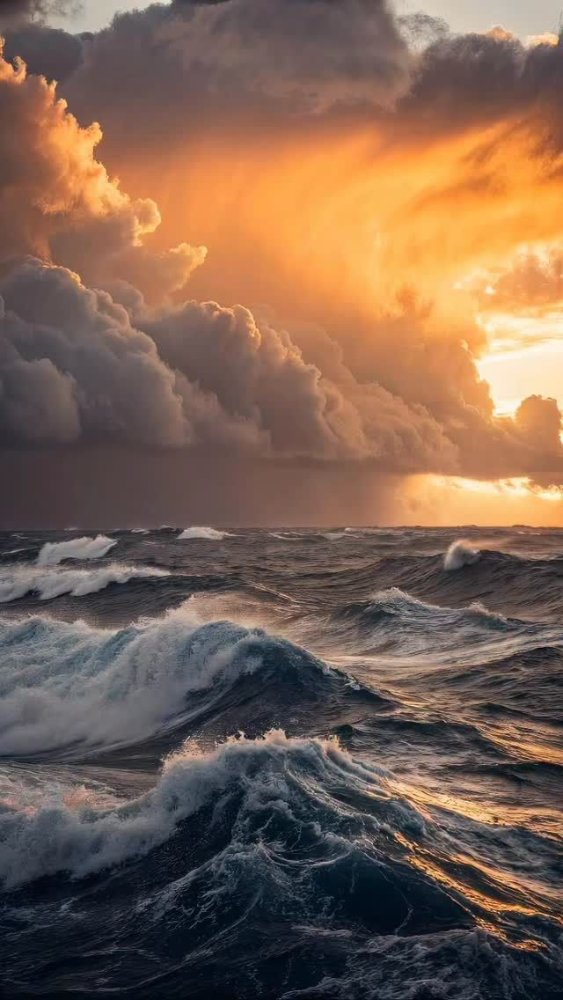
Over millions of years, heat and pressure increased. This changed the remains into fossil fuels such as oil and natural gas.
Electricity is one of the most important forms of energy in daily life. We use it at home, at school, in hospitals, in shops, and in factories. Without electricity, many activities would become difficult.
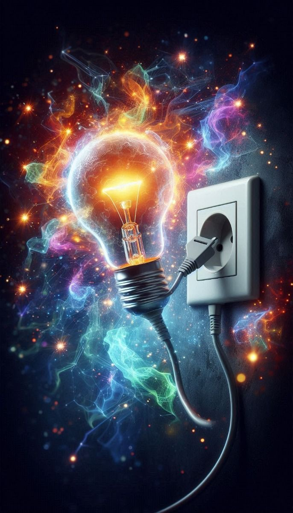
Electricity lights homes, schools, classrooms, and streets, especially at night.
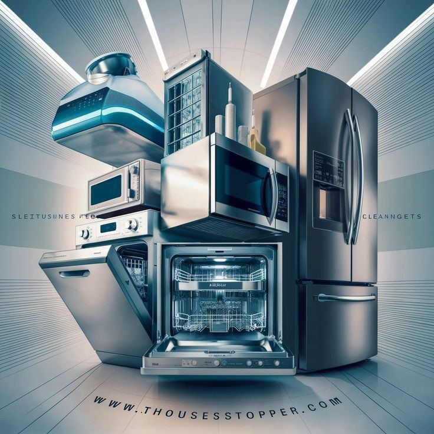
Refrigerators, fans, washing machines, televisions, and many household appliances need electricity to work.
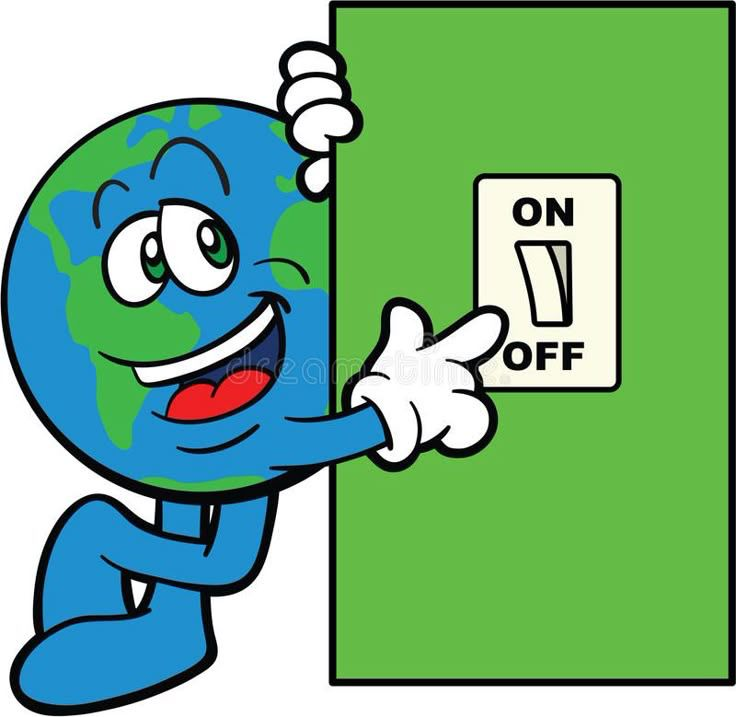
Computers, tablets, chargers, and many study tools depend on electricity every day.
In power plants, fossil fuels such as oil, coal, or natural gas are burned to generate electricity. The process happens in connected steps, and each step leads to the next one.
Fossil fuel is burned in the power plant. This produces heat energy, also called thermal energy.
The heat energy is used to heat water. When the water gets very hot, it changes into steam.
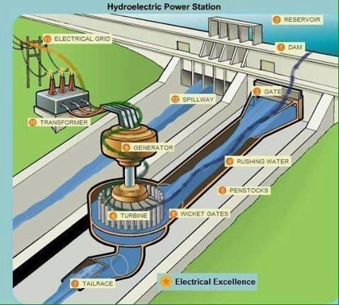
The steam moves through pipes and pushes a turbine. The turbine begins to spin.
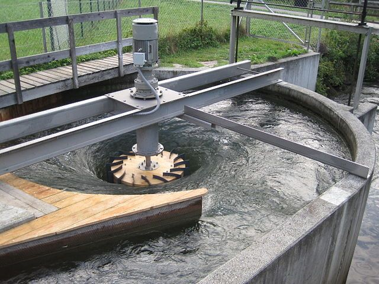
The spinning turbine turns a generator. The generator changes kinetic energy into electrical energy.
Electricity travels through wires and power lines to homes, schools, and buildings.
Electricity is very important, so we should conserve it and avoid wasting it. Conserving electricity helps save energy resources and protects the environment.
In this lesson, we learned that energy comes from natural resources. Oil is a nonrenewable resource, while water is a renewable resource. We also learned how fossil fuels are formed from marine organisms over millions of years. Finally, we studied how electricity is generated in power plants and why it is important to conserve electricity in daily life.
Oil takes millions of years to form, so it must be used carefully.
Water can be replaced naturally and is important for life and energy production.
Electricity is essential for lighting, appliances, and many modern devices.